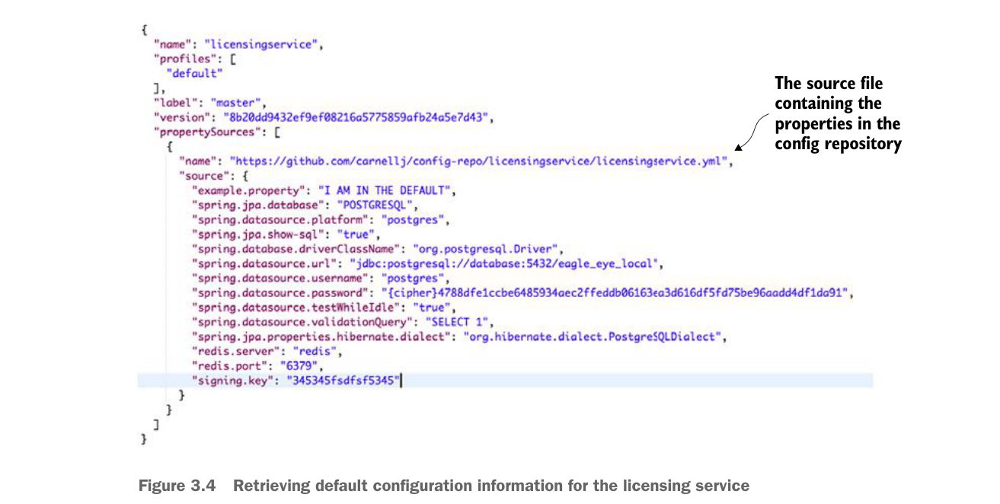

application that’s going to have properties managed by the configuration server. In the previous example, you only have the licensing service configured.
You now have enough work done to start the configuration server. Go ahead and start the configuration server using the mvn spring-boot:run command. The server should now come up with the Spring Boot splash screen on the command line. If you point your browser over to http://localhost:8888/licensingservice/default, you’ll see JSON payload being returned with all of properties contained within the licensingservice.yml file. Figure 3.4 shows the results of calling this endpoint.

Retrieving default configuration information for the licensing service
If you want to see the configuration information for the dev-based licensing service environment, hit the GET http://localhost:8888/licensingservice/dev endpoint. Figure 3.5 shows the result of calling this endpoint.
If you look closely, you’ll see that when you hit the dev endpoint, you’re returning back both the default configuration properties for the licensing service and the dev licensing service configuration. The reason why Spring Cloud configuration is returning both sets of configuration information is that the Spring framework implements a hierarchical mechanism for resolving properties. When the Spring Framework does